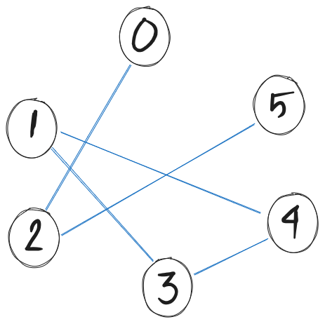
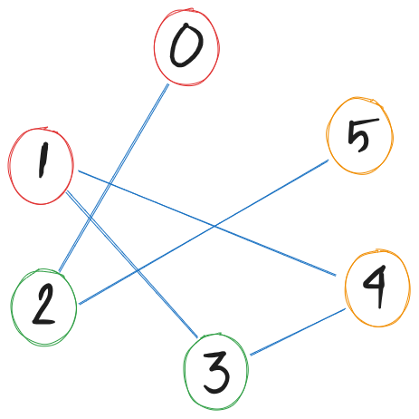

_ _ _ _ _ _ _ _ _ _ _ _ _ _ _ _
|S # # |
|# # # # # # # # # # # |
| # # |
| # # # # # # # # # # # # # #|
| # |
|# # # # # # # # # # # # # |
| # |
| # # # # # # # # # # # # # #|
| # |
| # # # # # # # # # # # # # |
| # # # |
| # # # # # # # # # # # |
| # # # # |
|# # # # # # # # # # # |
| # # # |
| # # # # # # # # # # # # # E|
_ _ _ _ _ _ _ _ _ _ _ _ _ _ _ _Many problems ask: “Find a solution among a huge set of candidates.”
Examples:
The naive plan:
for every possible candidate:
if it is a valid solution:
return itProblem: the candidate space is astronomically large.
For n-Queens (placing n non-attacking queens):
| n | Arrangements to check |
|---|---|
| 8 | 4,426,165,368 |
| 10 | ~3.6 billion |
| 15 | ~1.3 trillion |
| 20 | ~6 × 10¹⁷ |
Even at 10⁹ checks/second, n=20 would take ~20 years.
We need a smarter strategy.
Instead of generating complete candidates, build solutions step by step.
At every step:
This is backtracking: systematic exploration with early abandonment.
def explore(partial_solution):
if is_complete(partial_solution):
record(partial_solution) # found a solution!
return
for choice in get_choices(partial_solution):
if is_valid(partial_solution, choice):
partial_solution.add(choice) # make the choice
explore(partial_solution) # explore further
partial_solution.remove(choice) # undo (backtrack)The “undo” step is what makes backtracking work. We explore, retreat, and try something else.
Problem: Find a path from Start (S) to End (E) in a grid.
S . . #
# # . #
. . . .
# # # EChoices at each step: move Up, Down, Left, or Right
Constraint: stay in bounds, don’t hit #, don’t revisit cells
Backtrack when: we hit a dead end with no valid moves
S . . #
# # . #
. . . .
# # # EStart: [(0,0)]
→ Try Right: (0,1) ✓ → Path: [(0,0),(0,1)]
→ Try Right: (0,2) ✓ → Path: [(0,0),(0,1),(0,2)]
→ Try Right: (0,3) = '#' ✗
→ Try Down: (1,2) ✓ → Path: [...,(1,2)]
→ Try Down: (2,2) ✓ → Path: [...,(2,2)]
→ Try Right: (2,3) ✓ → Path: [...,(2,3)]
→ Try Down: (3,3) = 'E' ✓ DONE!Simple idea, powerful result. The key is the undo on dead ends.
maze = \
[['S', ' ', 'X', ' ', ' ', ' ', 'X', ' ', ' ', ' ', ' ', ' ', ' ', ' ', ' ', ' '],
['X', ' ', 'X', ' ', 'X', ' ', 'X', ' ', 'X', 'X', 'X', 'X', 'X', 'X', 'X', ' '],
[' ', ' ', ' ', ' ', 'X', ' ', ' ', ' ', 'X', ' ', ' ', ' ', ' ', ' ', ' ', ' '],
[' ', 'X', 'X', 'X', 'X', 'X', 'X', 'X', 'X', ' ', 'X', 'X', 'X', 'X', 'X', 'X'],
[' ', ' ', ' ', ' ', ' ', ' ', ' ', ' ', ' ', ' ', 'X', ' ', ' ', ' ', ' ', ' '],
['X', 'X', 'X', 'X', ' ', 'X', 'X', 'X', 'X', 'X', 'X', ' ', 'X', 'X', 'X', ' '],
[' ', ' ', ' ', ' ', ' ', ' ', ' ', ' ', ' ', ' ', ' ', ' ', 'X', ' ', ' ', ' '],
[' ', 'X', 'X', 'X', 'X', 'X', 'X', 'X', 'X', 'X', 'X', 'X', 'X', ' ', 'X', 'X'],
[' ', 'X', ' ', ' ', ' ', ' ', ' ', ' ', ' ', ' ', ' ', ' ', ' ', ' ', ' ', ' '],
[' ', 'X', ' ', 'X', 'X', 'X', 'X', 'X', 'X', 'X', 'X', 'X', 'X', 'X', 'X', ' '],
[' ', 'X', ' ', 'X', ' ', ' ', ' ', ' ', ' ', ' ', ' ', ' ', ' ', ' ', 'X', ' '],
[' ', 'X', ' ', 'X', ' ', 'X', 'X', 'X', 'X', 'X', 'X', 'X', 'X', ' ', 'X', ' '],
[' ', ' ', ' ', 'X', ' ', 'X', ' ', ' ', ' ', ' ', ' ', ' ', 'X', ' ', 'X', ' '],
['X', 'X', 'X', 'X', ' ', 'X', ' ', 'X', 'X', 'X', 'X', ' ', 'X', ' ', 'X', ' '],
[' ', ' ', ' ', ' ', ' ', 'X', ' ', ' ', ' ', ' ', 'X', ' ', ' ', ' ', 'X', ' '],
[' ', 'X', 'X', 'X', 'X', 'X', 'X', 'X', 'X', ' ', 'X', 'X', 'X', 'X', 'X', 'E']]def solve(r, c, path):
if not (0 <= r < 16 and 0 <= c < 16)
or maze[r][c] == 'X' or (r, c) in path:
return False
path.append((r, c))
# Base Case: Found the Exit
if maze[r][c] == 'E':
return True
# Explore: Up, Down, Left, Right
for dr, dc in [(0, 1), (1, 0), (0, -1), (-1, 0)]:
if solve(r + dr, c + dc, path):
return True
# Backtrack
path.pop()
return False
solution_path = []
rc = solve(0, 0, solution_path)
if rc: print("Path to exit:", solution_path)
else: print("No path found.")Problem: Given [3, 1, 4, 2, 5], find all subsets that sum to 6.
Approach: At each position, decide include or skip the element.
backtrack(index=0, current_sum=0, chosen=[])
├── include 3 → sum=3
│ ├── include 1 → sum=4
│ │ ├── include 4 → sum=8 ✗ (over target)
│ │ ├── skip 4
│ │ │ ├── include 2 → sum=6 ✓ [3,1,2]
│ │ │ └── skip 2
│ │ │ └── include 5 → sum=9 ✗
│ │ └── ...
│ └── skip 1
│ ├── include 4 → sum=7 ✗
│ └── skip 4
│ ├── include 2 → sum=5
│ │ └── include 5 → sum=10 ✗
│ └── skip 2
│ └── include 5 → sum=8 ✗
└── skip 3 → ... (finds [1,5])def subset_sum(nums, target):
results = []
def explore(index, current_sum, chosen):
if current_sum == target:
results.append(chosen[:]) # found a valid subset!
return
if index == len(nums) or current_sum > target:
return # dead end
# Choice 1: include nums[index]
chosen.append(nums[index])
explore(index + 1, current_sum + nums[index], chosen)
chosen.pop() # ← undo
# Choice 2: skip nums[index]
explore(index + 1, current_sum, chosen)
explore(0, 0, [])
return results
print(subset_sum([3, 1, 4, 2, 5], 6))
# → [[3, 1, 2], [1, 5], [4, 2]]Problem: Place n queens on an n×n board so no two queens share a row, column, or diagonal.
Key observations:
Row 0: Q . . . Q placed in col 0
Row 1: . . Q . col 0 and diagonals blocked → col 2 is free
Row 2: . . . . cols 0,2 and diagonals blocked → ...
Row 3: . Q . . eventually col 1 works!def n_queens(n):
solutions = []
cols = set()
diag1 = set() # row - col (top-left to bottom-right)
diag2 = set() # row + col (top-right to bottom-left)
def explore(row, placement):
if row == n:
solutions.append(placement[:])
return
for col in range(n):
if col in cols or (row-col) in diag1 or (row+col) in diag2:
continue # ← this column/diagonal is attacked
cols.add(col); diag1.add(row-col); diag2.add(row+col)
placement.append(col)
explore(row + 1, placement) # try next row
placement.pop() # ← backtrack
cols.remove(col); diag1.remove(row-col); diag2.remove(row+col)
explore(0, [])
return solutions| n | Solutions | Nodes explored (brute) | Nodes explored (backtracking) |
|---|---|---|---|
| 4 | 2 | 256 | ~26 |
| 6 | 4 | 46,656 | ~152 |
| 8 | 92 | 16,777,216 | ~2,057 |
| 10 | 724 | ~10 billion | ~15,720 |
Backtracking reduces explored nodes by orders of magnitude. And we haven’t even pruned yet!
Backtracking abandons paths that are already invalid.
Pruning goes further: abandon paths that cannot possibly lead to a valid solution — even if the partial solution is still technically valid.
Backtracking check:
“Is what I’ve done so far broken?”
Pruning check:
“Even if I keep going, can I possibly succeed?”
Pruning is about look-ahead: reasoning about the future before you explore it.
Recall subset_sum([3, 1, 4, 2, 5], target=6).
Sort the array first: [1, 2, 3, 4, 5]
Now we can prune aggressively:
def explore(index, current_sum, chosen):
if current_sum == target:
results.append(chosen[:])
return
for i in range(index, len(nums)):
# PRUNING: if even the smallest remaining element
# pushes us over the target, stop immediately
if current_sum + nums[i] > target:
break # ← all subsequent are even larger (sorted!)
chosen.append(nums[i])
explore(i + 1, current_sum + nums[i], chosen)
chosen.pop()One extra line. Huge reduction in explored nodes.
A standard pattern is to add a is_promising() check before recursing:
is_promising() encodes domain knowledge:
“Given what I’ve committed to, is there any way to finish successfully?”
Problem: Fill a 9×9 grid so each row, column, and 3×3 box contains digits 1–9.
. 5 . | . . . | . 7 .
. . 8 | . . . | 4 . .
. . . | 9 . 3 | . . .
------+-------+------
... (81 cells total)Backtracking alone: pick an empty cell, try digits 1–9.
Pruning idea: before placing a digit, compute the set of still-possible values for every empty cell.
After placing one digit, you can immediately eliminate many candidates in the same row/column/box.
If any cell’s candidate set becomes empty → prune immediately, no need to recurse.
def solve_sudoku(board):
empty = find_empty(board)
if not empty:
return True # all cells filled → solution!
row, col = empty
for digit in range(1, 10):
if is_valid_placement(board, row, col, digit):
board[row][col] = digit
# PRUNING: check if any cell now has 0 options
if not any_cell_has_no_options(board):
if solve_sudoku(board): # recurse
return True
board[row][col] = 0 # ← backtrack
return False
any_cell_has_no_optionsis the pruning check — it looks ahead without committing.
Problem: Colour a graph’s vertices with at most k colours so no two adjacent vertices share a colour.
Application: map colouring, register allocation, scheduling.

With k=3: can we colour nodes 0, 1, 2, 3, 4, 5 so neighbours differ?

With k=3: can we colour nodes 0, 1, 2, 3, 4, 5 so neighbours differ?
def is_safe(v, graph, c):
for neighbor in graph[v]:
if colors[neighbor] == c:
return False
return True
def solve_graph_coloring(graph, k, v=0):
# Base Case: All vertices are colored
if v == len(graph):
return True
# Try different colors for vertex v
for c in range(1, k + 1):
if is_safe(v, graph, c):
colors[v] = c # Choose
if solve_graph_coloring(graph, k, v + 1): # Explore
return True
colors[v] = 0 # Backtrack (Un-choose)
return False
graph = [[2], [3, 4], [0, 5], [1, 4], [1, 3], [2]]
colors = [0] * len(graph)
print(solve_graph_coloring(graph, 2), colors)
colors = [0] * len(graph)
print(solve_graph_coloring(graph, 3), colors)Backtracking doesn’t change the worst case (still exponential), but it dramatically improves average case.
| Algorithm | Worst Case | Typical Case |
|---|---|---|
| Brute force | O(n!) or O(kⁿ) | Same |
| Backtracking | O(n!) or O(kⁿ) | Much better |
| Backtracking + pruning | O(n!) or O(kⁿ) | Far better |
The key metric is nodes explored, not theoretical complexity class. Good pruning can reduce explored nodes from billions to thousands.
When implementing backtracking + pruning, ask yourself:
What is a “partial solution”?
→ What state do I need to track?
What are the choices at each step?
→ What’s the branching factor?
What makes a partial solution invalid? (backtracking)
→ Implement this check cheaply
What makes a partial solution hopeless? (pruning)
→ This is where domain knowledge pays off
Can I order choices to fail fast?
→ Try the most constrained variables first (MRV heuristic)